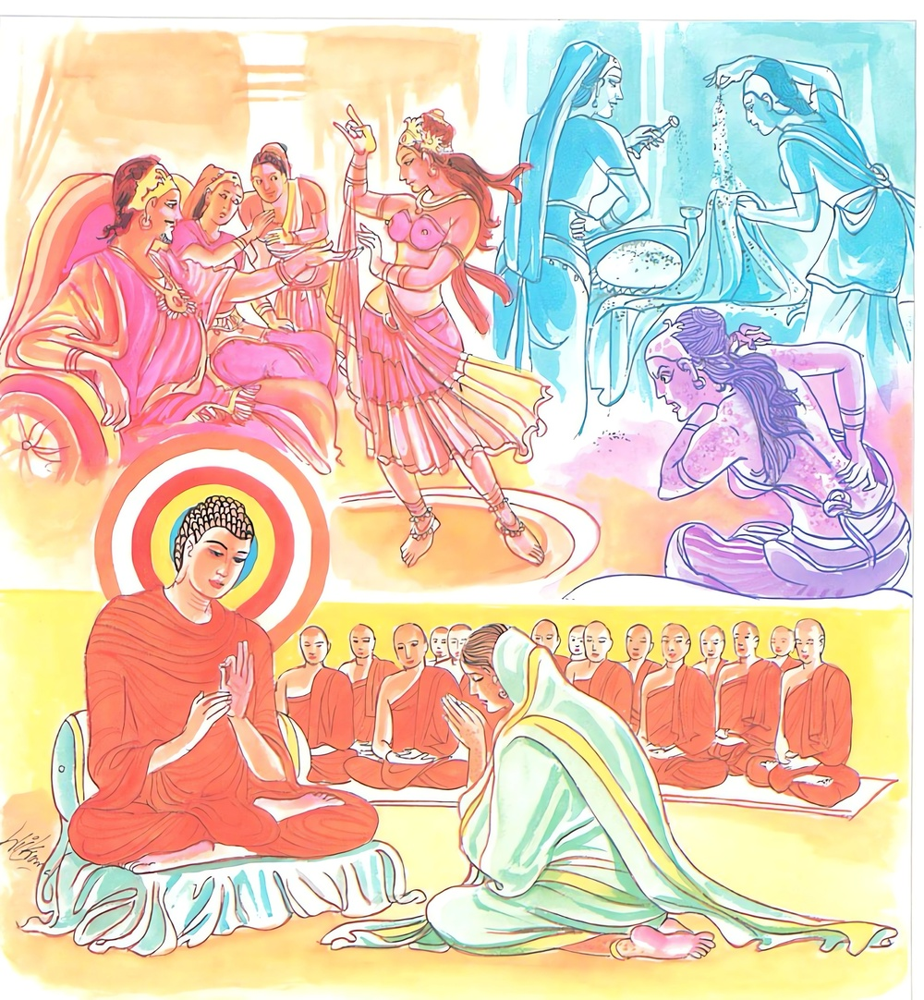

17-1 රෝහිණිය පිළිබඳ කථා පුවත
මෙම කතාව සද්ධර්ම සාගරයෙන් ද කියවන්න.
කොධං ජහෙ විප්පජහෙය්ය මානං
සඤ්ඤොජනං සබ්බමතික්කමෙය්යෙ
තං නාමරූපස්මිං අසජ්ජමානං
අකිඤ්චනං නානුපතන්ති දුක්ඛා.
ක්රෝධය දුරු කරන්නේ ය. මානය පහ කරන්නේ ය. (කාමරාගාදි) සියලු සංයෝජන ඉක්මෙන්නේ ය. නාමරූප දෙක්හි (මගේ රූපය මගේ වේදනාව යන ආදීන්) ඇලුම් නොකරන්නාවූ, (කෙලෙසුන් නැති හෙයින්) අකිංචන වූ ඒ පුද්ගලයා (කායික චෛතසික දුඃඛයෝ) අනුව නො පවත්නාහු ය.

"කොධංජහෙ" යන මේ ධර්ම දේශනය ශාස්තෲන් වහන්සේ නිග්රෝධාරාමයේ වැඩසිටිය දී රෝහිණී නම් වූ ක්ෂත්රිය කන්යාවක් නිමිති කරගෙන දේශනා කළහ.
එක් සමයක ආයුෂ්මත් අනුරුද්ධ තෙරණුවෝ පන්සියයක් භික්ෂූන් වහන්සේලා සමග කපිලවත්ථුවට වැඩම කළහ. අනතුරුව උන්වහන්ගේ ඥාතීන් තෙරුන්වහන්සේ වැඩම කළහයි අසා තෙරුන් සමීපයට ගියාහුය. රෝහිණී නම් වු තෙරුන්ගේ සොහොයුරිය කැඳවාගෙන නොගිය නිසා තෙරණුවෝ ඥාතීන්ගෙන් රෝහිණිය කොහේ දැයි විමසූහ. ස්වාමීනි ගෙදර සිටී. ඇයි ඇය මෙහි නොපැමිණියේ දැයි විමසූහ. ඇගේ සිරුරේ චර්ම රෝගයක් හටගත් නිසා ලජ්ජාවෙන් ඇය නොපැමිණියා ය. ඇය දැන් කැඳවන්නැයි කියා ගෙන්වා රෙදි සැට්ටය ගලවා පැමිණියා වූ ඇයට මෙසේ පැවසුවේය. රෝහිණි ඔබ නොපැමිණියේ කුමක් හෙයින්ද, ස්වාමීනි මගේ සිරුරේ චර්ම රෝගයක් පවතී. එනිසා ලජ්ජාවෙන් නොපැමිණියෙමි. ඇයි ඔබ කුසල් කිරීමට අකමැතිද? ස්වාමීනි කුමක් කරම්ද? ආසන ශාලාවක් කරන්න. ස්වාමීනි කුමක් ගෙනද කරන්නේ. ඇයි ඔබ ඔබගේ අලංකාරය සඳහා පළදින භාණ්ඩ නොමැතිද? ස්වාමීනි තිබේ. කොතරම් වටිනා භාණ්ඩ තිබේ? දසදහසක් වටිනා භාණ්ඩ ඇත. එසේනම් ඒවා වියදම් කර ආසන ශාලාවක් හදන්න. ස්වාමිනි මට මෙය කරවා දෙන්නේ කවුද? තෙරුන් ළඟ සිටි ඥාති පිරිස බලා නුඹ මෙහි වගකීම දැරිය යුතුය ස්වාමිනි ඔබ වහන්සේ කුමක් කරන්නේ දැයි විමසුව මම ද එසේ කරනෙමි. එසේ නම් මැයගේ භාණ්ඩ සමුහය අරගෙන එන්න. ඔවුහු ස්වාමීනි යහපතැයි රැගෙන ආවාහුය.
තෙරුන් ආසන ශාලාව සංවිධාන කරමින් රෝහිණිට මෙසේ පැවසුහ. තට්ටු දෙකේ ආසන ශාලාවක් කර උඩුමහලේ ලෑලි තට්ටුව යෙදු පසු යට ශාලාව නිතර අතුගා අසුන් පනවන්න. නිතර පැත්කළ තබන්න. ඇය යහපති ස්වාමිනි යි පවසා ස්වර්ණාභරණ විකුණා දෙමහල් ආසන ශාලාව කර උඩුමහලේ ලෑලි යෙදු තැන් සිට පිසදැමීම් ආදිය කළාය. නිතර භික්ෂුහු වාඩිවෙති. මේ අනුව අතුගාන විට ඇගේ ඡවි රෝගය සනීප විය. ඇය ආපන ශාලාව නිමවූවිට බුද්ධ ප්රමුඛ භික්ෂු සංඝයාට ප්රනීත වූ කැඳ කිස භෝජනය ද පිළිගැන්වුවාය. බුදුහු අහර කිස නිමවා මෙය කාගේ දානයක්දැයි විමසුහ. මගේ නැගණිය වු රෝහිණියන්ගේ යයි පැවසුහ. ඇය කොහිදැයි විමසා නිවසේ සිටිනබව අසා කැඳවන ලෙස දන්වුහ. ඇය ඊට පසු පැමිණ වන්දනා කර සිටියාවු ඇයගෙන් නොපැමිණිමට හේතුවත් විමසා ජවි රෝගය නිසා බව පවසා සිටි විට ඔබට මෙබඳු රෝගයක් ඇතිවීමට හේතුව කුමක්දැයි දන්නේදැයි විමසා නොදන්නා බව පැවසුවිට ඔබේ ක්රෝධය නිසා ඇතිවී යයි පැවසූ විට එය කුමක්දැයි විමසුවෙන් බුදුහු අතීත සිදුවීම දේශනා කළහ.
පෙර බරණැස් නුවර රජුගේ අගමෙහෙසිය රජුගේ එක් නිළියකට වෛර බැඳ ඇයට දුකක් ඇති කරමියි සිතා කසඹිලියා වැනි කසන ගෙඩි ගෙන්වාගෙන එම නිළිය තමන්වෙත ගෙන්වාගෙන ඇයට නොදැනෙන ලෙස ඇගේ සයනයේ ද උතුරු සළුව පටසළුව අතර ද කහඹිලියා කුඩු දැම්මවීය. ක්රීඩාවෙන් සිනහවෙන් ඇගේ සිරුරේ ද විසුර වීය. එකෙනෙහිම ඇගේ සිරුරේ ගඩු හටගෙන නින්දට ගියවිට ඒ කහඹිලියා කුඩු නිසා දැඩි වේදනාවට පත්වූවාය. ඒ අගමෙහෙසිය රෝහිණියයි. මේ අතීත පුවත බුදුරජාණන් වහන්සේ පෙන්වා දී ඔබ එදා මේ කර්මය කරන ලදී. ස්වල්ප ලෙස හෝ ක්රෝධය හෝ ඊර්ෂ්යාව හෝ කිරීම නුසුදුසු යයි පවසා මේ ගාථාව දේශනා කළහ.
කොරෝදය සමග මානය දුරුකරනු
මමමය මගේය අදහස අතහරිනු
සංයෝජන දහය වෙසෙසින් මග හරිනු
හැසිරි මේ අනුව සසරෙහි දුක නිවනු
එහි කොධං යනු ක්රෝධය නම් සියළු ආකාර ක්රෝධයයි මානං නව විධවු මානය ද අත්හල යුතුය. සඤ්ඤාජනං කාමරාග සංයෝජන දසවිධවු ආයෝජන ඉක්මවා යන්නේය. අසජ්ජමාන - මේ නොඇලීමය යමෙක් මගේ රූපය මගේ වේදනාව ආදී වශයෙන් නාම රූපයන්හි ඇලේ මෙසේ
නොගැනීමෙන් නොගන්නේ නො ඇලේ. එම පුද්ගලයා නොඇලෙන්නේ රාගාදිය නොමැති හෙයින් දුකට නොවැටේ. යන අර්ථයි. දෙසුම අවසන බොහෝ දෙන සෝවාන් ආදි ඵලයන්ට පැමිණියහ. රෝගිණිය සෝවාන් ඵලයට පත්වූවාය. එකෙනෙහිම ඇගේ සිරුර රන්වන් පැහැ ඇතිවිය. ඇය ඉන් චුතව දෙවිවරුන් සතර දෙනෙකුගේ සීමාවේ. පහළ වී රූසපුවෙන් අග්ර බවට පත්වූවාය. දෙවියන් සතර දෙනාටම සෙනෙහසක් ඇති විය. ඇය මගේ සීමාවේ පහළවුවාය. ඇය මගේ සීමාව ඇතුලත පහළ වුවායැයි වාද කරමින් සක්දෙවි රජවෙත ගියාහුය. දේවයනි. මැය නිසා අප අතර රණ්ඩුවක් ඇතිවිය. මෙය විසඳා ගන්නැයි කීවාහුය. සක්දෙවිඳු ද ඇය බලා නො ඇති වුයේ මෙසේ පැවසුවේය. මැය දුටු විට සිතේ කුමක් ඇති වුවේද? එහිදී එක් දෙවියෙක් මෙසේ පැවසුවේ. මැය නිසා මට ඇතිවු ස්නේහය යුද බෙරයක හඬක් ලෙස වාඩිවී සිටීමට නොහැකිවිය. අනවරතයෙන් පැවැතෙයි. දෙවැන්නා හා මගේ සිත ගලක ගලන ගඟුලක් සේ වේගයෙන් ගලායන්නේ විය. තුන්වැන්නා මම ඇය දුටු අවස්ථාවේ සිට කකුළුවෙකුගේ ඇස් ලෙස ඉදිරියට නෙරා ආවෝය. මගේ සිත සෑයක බැඳි කොඩියක් සේ නිසලව සිටීමට නොහැකිවිය. අනතුරුව සක්දෙවිඳු ඔවුන්ට මෙසේ පැවසුවේය. දරුවෙනි ඔබලාගේ සිතුවිලි බලහත්කාර ලෙස පිහිටා තිබේ. මට මැය ලැබුවොත් මම ජීවත් වෙමි. නොලැබුනහොත් මරණය වන්නේ යයි පැවසුවේය. දේවපුත්රයෝ මහරජ ඔබගේ මරණයෙන් තේරුමක් නැතැයි කියා ඇය සක්දෙවිඳුට පවරා පිටත්ව ගියහ. ඇය සක්දෙවිඳුට ප්රිය වුවාය. මනාප වුවාය. අසවල් ක්රීඩාවට යමු යයි පැවසුවිට සක් දෙවිඳුට ඇගේ වචනය ප්රතික්ෂේප කිරීමට නොහැකි විය.
1 මෙය සද්ධර්මරත්නාවලියේ සඳහන් වන්නේ "පටකඩ සැට්ටයක් ඇඟ වසා ලාගෙන" කියායි